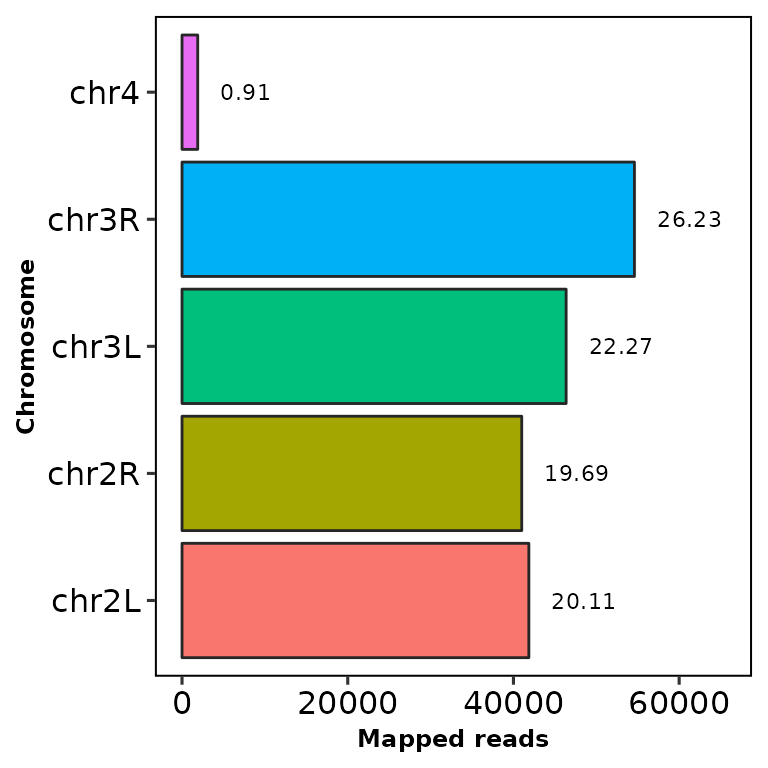

Last updated: 2022-06-15
plotmics# load plotmics
library(plotmics)chromReads()chromReads() draws an ggplot2-based horizontal barplot with the number and percentage of reads mapped to each chromosome.
It takes the path to a BAM file as an input. This BAM file must have a valid index.
chromReads(bamfile = "../testdata/sampleX.bam")The bar shows the reads mapped into each chromosome and the number at the right is the percentage of the total reads (including the filtered chromosomes).
Using the parameter chr.filt, the undesired chromosomes can be filtered out.
This parameter requires a character vector with part of the names of the chromosomes to be filtered. Let’s remove the chr2L and chr2R chromosomes:
chromReads(bamfile = "../testdata/sampleX.bam", chr.filt = "chr2")Now try removing the chrX and chrY chromosomes:
chromReads(bamfile = "../testdata/sampleX.bam", chr.filt = c("X", "Y"))
Note that the percentage of reads does not change, since it’s computed using all the reads from all the chromosomes.
Using the parameters main, subtitle, xlab and ylab you can customize the title, the subtitle the X-axis label and the Y-axis label, respectively.
chromReads(bamfile = "../testdata/sampleX.bam", main = "This is a title",
subtitle = "This is a subtitle", xlab = "This the label of the X axis",
ylab = "This is the label of the Y axis")Moreover, you can customize the size of the previous mentioned labels, as well as the percentage label:
chromReads(bamfile = "../testdata/sampleX.bam", main = "This is a title",
subtitle = "This is a subtitle", xlab = "This the label of the X axis",
ylab = "This is the label of the Y axis",
main.size = 16, sub.size = 10, axis.size = 14, percent.size = 9)By setting percent.label to FALSE, you can remove the percentage labels.
chromReads(bamfile = "../testdata/sampleX.bam", percent.label = F)Since chromReads outputs a ggplot2-based barplot, you can further customize it with scales or theme, etc.